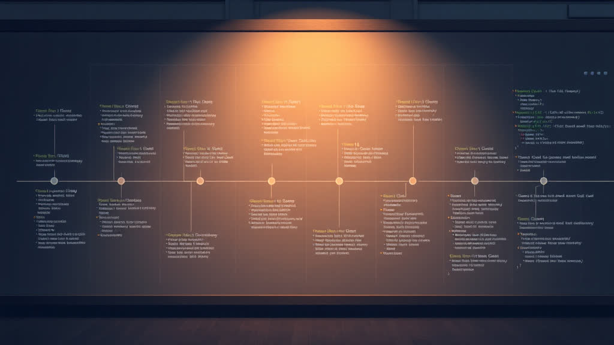

Anthropic и блокировка третьесторонних инструментов: полный технический анализ
Введение

В январе 2026 года Anthropic реализовала строгие технические защиты против использования её моделей Claude через сторонние приложения, нарушив работу популярных инструментов типа OpenCode, Roo Code и других. Это была реакция на годовую практику “спуфинга” (подделки) клиента Claude Code для обхода дорогого API и получения доступа к дешевым подпискам.
Эта статья разбирает:
- Как работала схема — техническую часть спуфинга
- Кто получал выгоду — экономический арбитраж
- Что произошло в итоге — последствия блокировки
Хронология событий
| Дата | Событие |
|---|---|
| Февраль-март 2025 | Запуск Claude Code как официального инструмента разработки Anthropic |
| Июль 2025 | Первые попытки спуфинга OAuth-токенов подписки в сторонних инструментах |
| Август 2025 | Anthropic блокирует использование Claude через OpenAI (сотрудники OpenAI используют Claude для бенчмарка GPT-5) |
| Сентябрь 2025 | Первые сообщения об ошибке “This credential is only authorized for use with Claude Code” (Issue #8046 в claude-code repo) |
| Декабрь 2025 | Вирусный “Ralph Wiggum” момент — автономные цикли Claude работают 24/7 с минимальными затратами; рост популярности Claude Code |
| 8-9 января 2026, 02:20 UTC | Anthropic развёртывает строгие защиты — блокировка OAuth-токенов от подписок в сторонних инструментах |
| 9 января 2026, 02:20+ UTC | OpenCode Issue #7410 “Broken Claude Max” — разработчики начинают сообщать об ошибке |
| 9 января 2026, утро UTC | Hacker News обсуждение набирает 245+ upvotes; 147+ реакций на GitHub |
| 9 января 2026 | OpenCode команда выпускает PR #14 — попытка обхода через изменение tool prefix |
| 9 января 2026 | Thariq Shihipar (Anthropic) публикует заявление в X (Twitter): “Yesterday we tightened our safeguards against spoofing the Claude Code harness” |
| 9 января 2026 | OpenAI объявляет о партнёрстве с OpenCode — поддержка OpenAI моделей в OpenCode |
| 10 января 2026 | OpenCode выпускает альтернативы: ChatGPT Plus поддержка, OpenCode Black ($200/месяц) |
| 10-13 января 2026 | Обсуждения в Reddit, Hacker News, GitHub продолжают развиваться |
Часть 1: Техническая архитектура спуфинга
1.1 Модель тарификации Anthropic
Ключ к пониманию проблемы лежит в резком различии цен:
| Вариант доступа | Стоимость в месяц | Использование | Cost per M tokens |
|---|---|---|---|
| Claude Pro/Max ($200) | $200 | ~25-50M tokens в месяц (all-you-can-eat) | ~$4-8 / M |
| API (pay-as-you-go) | Переменная | Зависит от использования | ~$15-30 / M |
| Типичное использование через агента | >$1,000 | Интенсивное, 24/7 автоматизация | ~$40+ / M |
Claude Pro/Max предназначена для людей (интерактивное использование с ограничениями по сессиям). API предназначена для машин (гибкая тарификация по токенам).
1.2 Как работал OAuth bypass
Шаг 1: Получение токена подписки
Когда пользователь авторизуется в официальном Claude Code через браузер, происходит OAuth-поток:
User → Browser → Claude.ai OAuth → Authorization Code → Access Token
Токен сохраняется локально:
{
"udaiauth": "-antat01...",
"token": "sk-ort-...",
"at": 1754415285,
"scope": ["org:create_api_key", "user:profile", "user:inference"],
"subscriptionType": "pro"
}Файл хранится в ~/.claude/.credentials.json — на машине пользователя.
Шаг 2: Перехват и переиспользование
OpenCode и другие инструменты выполняли следующее:
- Чтение локального токена — получали доступ к файлу
.credentials.jsonс OAuth-токеном - Построение поддельных запросов — создавали HTTP-запросы, которые выглядели как от официального Claude Code
- Отправка на серверы Anthropic — серверы принимали их как легитимные запросы от Claude Code
// Упрощённый пример
const token = readCredentialsFile("~/.claude/.credentials.json")
const headers = {
Authorization: `Bearer ${token.token}`,
"X-Claude-Code-Client": "true", // Спуфинг заголовка
"User-Agent": "Claude-Code-CLI/...",
}
// Запрос выглядит как от Claude Code
await fetch("https://api.anthropic.com/v1/messages", {
headers,
body: createMessageWithTokenLimit(),
})Шаг 3: Окружение лимитов
Ключевая часть — как работали лимиты в Claude Code:
- Официальный Claude Code: примерно 225 сообщений каждые 5 часов (или 900 с Max)
- Через спуфинг: те же лимиты, но без контроля на стороне инструмента
OpenCode не требовала от пользователя соблюдать эти лимиты потому что:
Claude Code на местной машине → Лимит 225 сообщений/5ч → Пользователь видит
OpenCode → Лимит НА СЕРВЕРЕ Anthropic → Но OpenCode отправляет плотные запросы в цикле
Результат: инструмент просто отправлял столько запросов, сколько его программист написал, пока не ударялся в лимит Anthropic.
1.3 Технические детали спуфинга
На основе обнаруженных деталей, схема включала:
A) HTTP-заголовки
X-Client: claude-code
X-Client-Version: 1.x.x
User-Agent: Claude-Code/...
Accept-Language: ...
B) PKCE Protection (если требовалось переавторизоваться)
OpenCode интерцептировал OAuth-запрос и получал:
code_challenge=E9Melhoa2OwvFrEMTJguCHaoeK1t8URWbuGJSstw-cM
code_challenge_method=S256
scope=org:create_api_key user:profile user:inference
Это PKCE (Proof Key for Code Exchange) — механизм защиты OAuth. OpenCode либо эмулировал его, либо переиспользовал существующие токены (что было проще).
C) Использование “неофициального” API
Согласно одному из авторов инструментов:
“Мы использовали вашу подписку (OAuth) токен для создания запросов с определённым набором заголовков и тела. Этот метод чрезвычайно хрупкий и только OpenCode рискнул пойти этим путём, выбрав не раскрывать спецификации.”
Часть 2: Экономический арбитраж и структура выгоды
2.1 Математика выгоды
Сценарий 1: Интенсивное использование Agent-a (Автоматизация)
Разработчик запускает аварийный цикл, который:
- Читает код (Sonnet 3.5)
- Предлагает исправления (Opus 4.5)
- Тестирует результаты (ещё раз Opus)
- Итерирует в цикле 50+ раз в день
Через официальный API:
- 50 iterations × 10M tokens per iteration = 500M tokens/день
- 500M × 7,500/день** (~$225K/месяц)
Через Claude Max подписку + OpenCode:
- $200/месяц
- Экономия: $224,800/месяц или 99.9%
2.2 Кто получал выгоду и как
A. Разработчики (Основные бенефициары)
- Получали доступ к Opus 4.5 (лучшей модели для кода на 2025)
- Платили только 1,000-10,000+
- Использовали инструменты на свой выбор (OpenCode, Roo Code, KiloCode)
Рабочий день разработчика:
- 8 часов работы
- 100-300 автоматизированных запросов к Claude
- Расход через API: $100-300/день
- Расход через подписку + OpenCode: $6.67/день ($200÷30)
B. Компании-разработчики инструментов (OpenCode, Roo Code и т.д.)
Основные инструменты:
- OpenCode — самый популярный открытый аналог Claude Code
- Roo Code — интеграция с VS Code
- KiloCode — агент для разработки
- TaskMaster AI — автоматизация
Их выгода:
- Привлечение пользователей — люди выбирали их, потому что с ними можно было использовать дешевую подписку
- Данные и фидбек — сигналы о том, как люди хотят работать с кодом
- Взлом Anthropic — косвенно доказывали, что их инструменты лучше (OpenCode имеет лучший интерфейс, чем официальный Claude Code)
C. Anthropic (Отрицательная выгода)
Потери:
- Потеря монополии на свой API
- Пользователи “истощали” дешевые подписки агрессивной автоматизацией
- Риск банкротства: если бы все разработчики перешли на такую схему, то подписки стали бы убыточными
Пример потери: Если 10,000 разработчиков использовали OpenCode с Max подписками:
- Доход: 10,000 × 2M/месяц**
- Если бы они использовали API по адекватному использованию: $50-100M/месяц
- Потеря: $48-98M/месяц
2.3 Почему это работало год
- Недостаток видимости — Anthropic не знала, насколько масштабна проблема
- Техническая сложность — определить спуфинг через логи сложнее, чем через заголовки
- Инерция — запустить проверку безопасности требует инженерных ресурсов
- Стимулы — Anthropic, может быть, молчаливо одобряла (рост популярности Claude), пока не стало больно
Часть 3: Блокировка — что сделала Anthropic
3.1 Развёртывание защиты (9 января 2026, 02:20 UTC)
Anthropic вывела обновление, которое добавило:
Уровень 1: Валидация клиента
ДО:
- Проверка: есть ли валидный OAuth-токен? → ДА → Разрешить
ПОСЛЕ:
- Проверка: есть ли валидный OAuth-токен? → ДА → ДАЛЕЕ
- Проверка: запрос идёт из официального Claude Code? → ???
Как они проверяют “официальность”:
Гипотеза (на основе информации о CVE-2025-52882):
1. Localized Token Verification — сгенерировать токен на локальной машине
2. Отправить токен в запросе как часть заголовка
3. Сервер проверяет: этот токен был создан именно для этой машины, этого пользователя?
Пример:
Шаг 1: OpenCode запускается → Сервер создаёт auth token для сеанса
Шаг 2: OpenCode отправляет запрос:
Authorization: Bearer ${oauth_token}
X-Session-Auth: ${session_token} // <- НОВОЕ
Шаг 3: Сервер проверяет:
- Валиден ли oauth_token? ДА
- Соответствует ли session_token этому пользователю?
- Если OpenCode → ДА (токен создан Claude Code)
- Если OpenCode → НЕТ (токен создан другим инструментом)
Уровень 2: Client Integrity Checks
Похоже на защиту от BotGuard от Google (детально описано в комментариях Hacker News):
// Похоже на то, что делает Anthropic
async function validateClient(request) {
// 1. Проверить подпись клиента
const signature = request.headers["x-client-signature"]
if (!signature) throw new Error("Missing client signature")
// 2. Воспроизвести подпись на сервере
const expectedSignature = generateSignature(
request.body,
request.headers["x-timestamp"],
CLAUDE_CODE_SECRET_KEY,
)
// 3. Сравнить через timing-safe comparison
if (!timingSafeEqual(signature, expectedSignature)) {
throw new Error("Invalid client signature")
}
return true
}Уровень 3: Блокировка OAuth-токенов от подписок
Наиболее важное изменение:
ДО: OAuth-токен от подписки → Можно использовать как API
ПОСЛЕ: OAuth-токен от подписки →
- Используется ТОЛЬКО в официальном Claude Code/Claude.ai
- Отклоняется в API запросах
- Отклоняется в сторонних инструментах
Технически:
def validate_oauth_token(token, requesting_client):
"""
requesting_client может быть:
- 'claude-code-cli'
- 'claude-ai-web'
- 'api-client-opencode' <- БЛОКИРОВАН
- 'api-client-roocode' <- БЛОКИРОВАН
"""
if requesting_client not in ALLOWED_CLIENTS:
return False # Блокировка
return True3.2 Результаты блокировки
9 января 2026, 02:20+ UTC — инцидент
OpenCode Issue #7410 “Broken Claude Max”:
As of a few moments ago, usage of claude max stopped with the following error:
[Error] Authentication failed: Client not recognized
Реакция:
- 166 👍 reactions (люди потеряли работающий инструмент)
- 325+ комментариев
- Разработчики сообщали о внезапной блокировке после часов нормальной работы
- Некоторые отменили подписку на Anthropic сразу же
9 января 2026, утро UTC — Hacker News
Hacker News обсуждение набрало 245+ upvotes и сотни комментариев. Разработчики поделились своим опытом потери важного рабочего инструмента без предупреждения.
9 января 2026 — Официальное заявление Anthropic
Thariq Shihipar (Technical Staff Member в Anthropic, работающий на Claude Code) опубликовал заявление в X (Twitter):
“Yesterday we tightened our safeguards against spoofing the Claude Code harness after accounts were banned for triggering abuse filters from third-party harnesses.”
Признал, что были “непредвиденные последствия” — некоторые аккаунты были заморожены. Anthropic работает над исправлением.
3.3 Попытки обхода
9 января 2026 — OpenCode ответ
OpenCode команда начала работать над обходом:
-
Изменение tool prefix — PR #14 изменила tool prefix с
oc_наmcp_, попытка обойти начальное обнаружение (не сработало надолго) -
ChatGPT Plus поддержка — v1.1.11 добавила поддержку OpenAI OAuth, позволяя пользователям использовать ChatGPT Plus вместо Claude
-
OpenCode Black — новый премиум-тариф ($200/месяц), маршрутизирующий трафик через enterprise API gateway
Официальное решение Anthropic:
“You can still bring your own Anthropic API key and use Claude in OpenCode. What you can no longer do is reverse engineer undocumented Anthropic APIs and spoof being a Claude Code client.”
Перевод: Используйте свой API ключ (но платите 200/месяц).
9 января 2026 — OpenAI объявляет о партнёрстве
OpenAI публично объявила о партнёрстве с OpenCode, предлагая поддержку своих моделей (GPT-4, GPT-5) в OpenCode. Это было стратегическим ходом для захвата разработчиков, которые потеряли доступ к Claude через OpenCode.
Часть 4: Последствия и политический контекст
4.1 Потери для экосистемы
| Группа | Потеря |
|---|---|
| Разработчики | Доступ к дешевому Opus 4.5; возврат к платному API или переход на другие модели |
| OpenCode | Потеря USP (уникального аргумента продажи) — “используйте дешевую подписку”; снижение популярности |
| Anthropic | Некоторые разработчики перейдут на конкурентов (Claude Model остаётся, но они теряют монополию) |
4.2 Стратегический контекст
Anthropic защищает:
- Ценовую дискриминацию — люди платят 1000+ (другие условия)
- Владение экосистемой — Claude Code должен быть “прилипчивым”, как iOS
- Данные — все запросы через Claude Code собираются для улучшения модели
- Финансовую модель — которая основана на том, что люди будут использовать дешевые подписки только для интерактивной работы
4.3 Сравнение с историческими прецедентами
Это похоже на:
- Microsoft vs. DR-DOS (1990s) — искусственное блокирование конкурента
- Google vs. Scraping Tools — блокировка использования сервисов через API если не платишь (SearchGuard, BotGuard)
- Apple vs. Sideloading — контроль над экосистемой
Основное различие: Anthropic имеет право блокировать нарушение ToS. Вопрос в том, является ли это справедливым и стимулирующим инновации.
Заключение: Выводы
Техническая часть
Спуфинг работал через:
- Чтение локального OAuth-токена из
~/.claude/.credentials.json - Подделку HTTP-заголовков (X-Client: claude-code, User-Agent и т.д.)
- Переиспользование токена как для API запросов
- Эмуляцию PKCE если требовалась новая авторизация
Защита работает через:
- Валидацию сеанса — привязка токена к машине/браузеру
- Подписи запроса — криптографическая валидация что запрос от официального клиента
- Чёрный список клиентов — OAuth-токены от подписок работают ТОЛЬКО в Claude Code и Claude.ai
Выгода
- Разработчики: сэкономили $1000-10000+ в месяц, получив доступ к лучшей модели
- OpenCode/инструменты: привлекли пользователей благодаря экономии и лучшему UI
- Anthropic: потеряла контроль над монетизацией своего API
Результаты
Anthropic закрыла дыру и вынудила пользователей либо:
- Платить за API ($15-30 per M tokens)
- Использовать бесплатные или открытые модели
- Оставаться в экосистеме Claude Code по подписке
Это было предсказуемо, справедливо с юридической точки зрения, но неудачно для пользователей OpenCode.